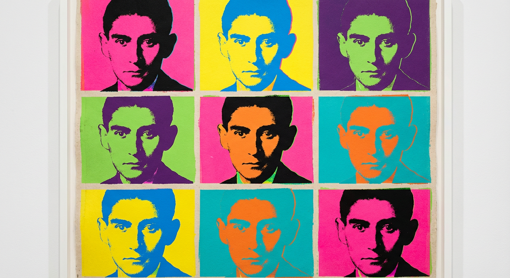
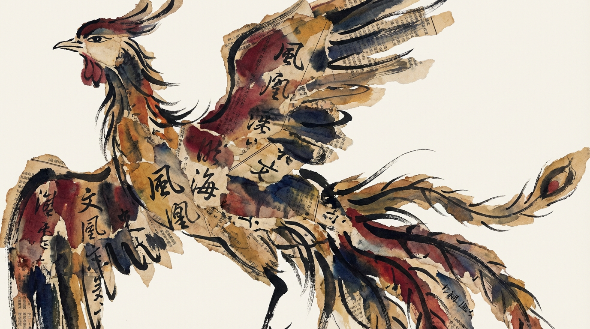
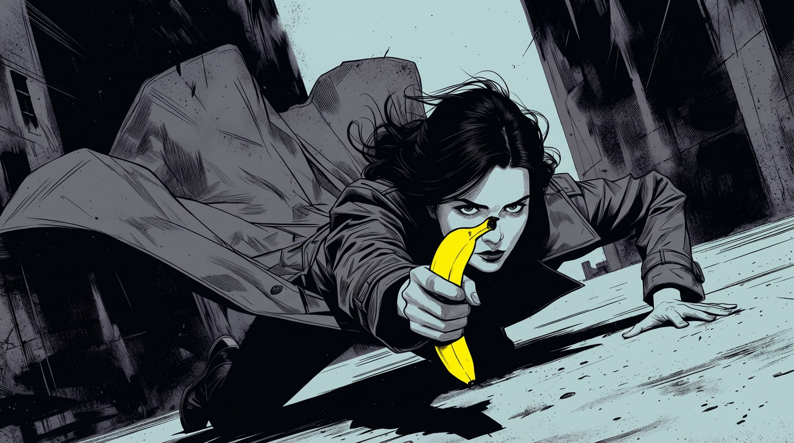

If gold were everywhere, then gold would be garbage.
🐎 The Racetrack
📚 Kafka

Unless one is a madman bearing the title of genius, it is absolutely impossible to continuously author stories completely devoid of meaning. Borges's world is like a perfectly whole sphere unto itself; whereas Kafka's world, though equally whole, secretly contains a hole somewhere leading to nothingness.
— Tatsuhiko Shibusawa, Heraldry of Thought
He recited the novel in a beautifully sonorous voice, but in reality, his tone wasn't suited for Kafka. In my view, Kafka's novels ought to be read in the most monotonous voice possible—ideally by Siri on a smartphone—with an invariably even rhythm, as if reading an instruction manual to someone illiterate.
— Shuang Xuetao, Uninterrupted People
Once the tea was finished, the interrogation began immediately. An endless cycle of tedious questions. Such as exactly which chapters of The Trial were read, and at what precise moment the pajamas were changed. I gave the fisherman a summary of Kafka's novels, but it didn't seem to pique his interest. To him, I imagine, such plots were everyday occurrences. I couldn't help but worry whether Franz Kafka's novels would even survive into the twenty-first century. Regardless, he actually jotted down the main plot of The Trial. Why bother recording all these things one by one? I was genuinely baffled. It was profoundly Franz Kafka-esque.
— Haruki Murakami, Dance Dance Dance
The contemporary French philosopher Georges Bataille noted a mysterious connection between "children" and "evil." In his view, a good writer always possesses a touch of wickedness—that is, a willingness to maintain an "irresponsible, childlike" attitude, which runs entirely counter to the rules, responsibilities, and sense of order demanded by the adult world. Take Kafka, for example: he was single-mindedly devoted to writing, and remained highly hesitant and resistant toward all secular jobs and marriage. His writing fervor thus took on a childlike flavor, leading Bataille to deem him somewhat wicked.
— Zhang Qiuzi, Don Quixote's Glasses
💡 Fleeting Thoughts

Isn't pizza just a dish where you can eat the plate, too?
Calling AIGC "garbage" doesn't necessarily imply poor quality; it might merely be a reflection of overwhelming quantity. If gold were everywhere, then gold would be garbage.
"Hundreds of birds paying homage to the phoenix" is really just "moths darting into the flame."
"So why did you stay up late last night, too?" "Due to games."
🛠️ Workbench

I've come across some usage scenarios for the new Nano Banana Pro model and selected a few examples to showcase:
🌐 Translating Illustrations
In previous issues of the Weekly, I've frequently discussed methods for using AI to translate fiction text. The newly released Nano Banana Pro, however, can now directly translate illustrations.
Example 1: Image source: The Strange Map by Uketsu.
Please convert all the Japanese text in the image to Simplified Chinese, maintaining the original visual elements.
The translation is slightly unnatural. What exactly does "the blueprint is said to be made" even mean?

Example 2: Image source: 100 Deadly Skills, by Clint Emerson
Please convert all the English text in the image to Simplified Chinese, add color to the illustration, and maintain the original visual elements.
This time, in addition to translating, it also colorized the image. However, "the rule of bluffing" is a wildly inaccurate translation. According to the original text, "BLUF" stands for "Bottom Line Up Front," which essentially means "summary" or "main point." This goes to show that even image translation requires a glossary.

🗺️ Travel Journal
The prompt looks something like this:
Based on the photos I've attached, help me generate a collage-style travel journal entry for [Location] (Date: 20XX-XX-XX). It should document my itinerary and include photos from the trip, with text in both Chinese and English.
Here are my actual previous notes: ...
For models equipped with Chain-of-Thought reasoning capabilities, the prompt itself is no longer quite as critical... In short, you just feed the AI the information you've previously posted on your social feeds, and have it present that content within a single image. For instance:
Speaking of Hongcun, I'm reminded of a sketch I saw a while back. It was uncanny—almost identical to a (cropped) photo I had taken on my phone.
😄 Oogiri
Previously on: Not a Single Serious Sentence: The Oogiri Comedy Duo of Gemini and Seedream
Because the Nano Banana model is incapable of adding Chinese text directly into images, I previously used gemini-2.5-pro and seedream-4 in a relay to accomplish the "Image Oogiri" tasks.
Seeing that Nano Banana Pro natively supports Chain-of-Thought reasoning and rendering Chinese text, I decided to test it out using the initial prompt (Prompt - Image Oogiri v1.0).
[Role Definition] You are a Japanese Oogiri (comedy improvisation) master. You excel at observing the absurd, contradictory, and hilarious elements within an image, using sharp roasts and witty wordplay to create a "Text-Based Oogiri" effect.
[Core Oogiri Styles]
Tsukkomi (Straight Man) Roast: Sharp commentary pointing directly at the core of the issue.
Dajare (Pun) Wordplay: Homophones, double entendres, semantic shifts.
Contradiction Discovery: Finding the illogical, absurd, or awkward elements in the image.
Daily Life Connection: Linking observations to universal human experiences.
Contrast Humor: Combining calm narration with sudden twists.
[Output Format] Original image + text roast. The text should be presented in a Japanese comedic style and may include:
Directly roasting the absurd points in the image.
Using homophones or puns for humorous embellishment.
Simulating the inner monologue (OS) of characters/objects in the image.
Contrasting the scene with awkward everyday moments.
[Text Style Requirements]
Position: Centered at the bottom of the image.
Font: Bold sans-serif, similar to Japanese variety show subtitles.
Color: White text with black outline/drop shadow, ensuring visibility against any background.
Size: Eye-catching but not overpowering.
Style: Mimicking the exaggerated subtitle effects of Japanese variety shows, possessing strong visual impact.
Layout: Concise and punchy, adjusting font size appropriately based on content length.
[Task] Please analyze the input image, identify the humorous elements, and create a Chinese roast in the Oogiri style. Requirements:
Capture the most absurd or contradictory moment in the image.
Use wordplay or homophone puns.
Reflect the restrained feeling of Japanese deadpan humor.
Keep the text short and punchy, under ten characters, suitable for social media sharing.
The text style must conform to the [Text Style Requirements] above, ensuring the visual effect aligns with the roasting style of Japanese variety shows.
Here are the boke (funny man) results for the same prompt (Oogiri is, after all, a type of comedy panel game):
!
The first is the result of the previous double act by gemini-2.5-pro and seedream-4, while the second is Nano Banana Pro's solo creation. It seems that relying solely on Nano Banana Pro still yields somewhat baffling results.
Therefore, I paired gemini-3.0-pro with Nano Banana Pro (gemini-3.0-pro-image) to form a new comedy duo. The results are as follows:
A sense of humor is hard to put into words, but I used gemini-3.0-pro to summarize gemini-3.0-pro's own thought process for reference.
We can summarize its thought process into the following four stages:
1. Setting the Tone and Breaking the Mold: Rejecting Convention, Establishing a "Comedic Contrast" Tone
- Initial State: The AI first identifies the image as a typical "campus romance scene" (gymnasium, teenage boy and girl, handing over an item).
- Core Strategy: It immediately decides to overturn the "romance tropes". It figures that interpreting it conventionally is too boring and it must find an absurd, humorous angle.
- Goal: To create a strong comedic contrast—the scene looks romantic, but is actually cruel or vulgar.
2. Brainstorming: Wild Associations from "Bombs" to "Subpoenas"
- The AI begins wildly associating ideas based on the "red box/envelope" in the girl's hands and her "victorious smile."
- Attempted Ideas:
- Dangerous goods: Time bomb (C4), curse.
- Legal/Serious: Court subpoena, divorce agreement, expulsion notice.
- Spoof/Awkward: Unzipped fly, prank (a brick), "I am your mother."
- Business/Sales: Multi-level marketing (MLM), insurance pitch.
- Filtering Criteria: It is constantly searching for the logic that best explains the girl's "smug smile" and the boy's "dumbfounded expression."
3. Logical Filtering and Iteration: Finding the Sweet Spot Between "Scene" and "Action"
- The AI discards several ideas during the filtering process:
- "Urn" is too morbid.
- "I am your mother" is funny but a bit too direct.
- "Bomb" feels a bit stale.
- "Unzipped fly" isn't an explosive enough punchline.
- Crucial Turning Point: The AI begins to re-examine the environment (Gymnasium). It realizes that integrating the joke with the setting will feel more natural.
4. Final Decision: Contextual Grounding—"Signing up for a membership"
- Locking in the Core: It returns to the logic of a "sales pitch/transaction" (having previously considered MLMs and insurance).
- Integrating the Environment: Since they are in a gymnasium, what is the most logical yet devastating sales pitch? Signing up for a gym membership.
- Final Draft: Reversing the "romantic confession" into "successfully duping the other person into a ten-year gym membership."
- Girl's smile = Joy of hitting a sales quota.
- Boy's blank stare = Shock of realizing he's saddled with long-term debt.
- Red box = Membership contract/gift.
Summary of the AI's Cognitive Formula: Visual Recognition (Romantic Confession) + Deliberate Reversal (Rejecting Romance Tropes) + Element Substitution (Replacing Love Letter with Contract/Bomb) + Contextual Adaptation (Gymnasium = Gym Membership) = Final Joke